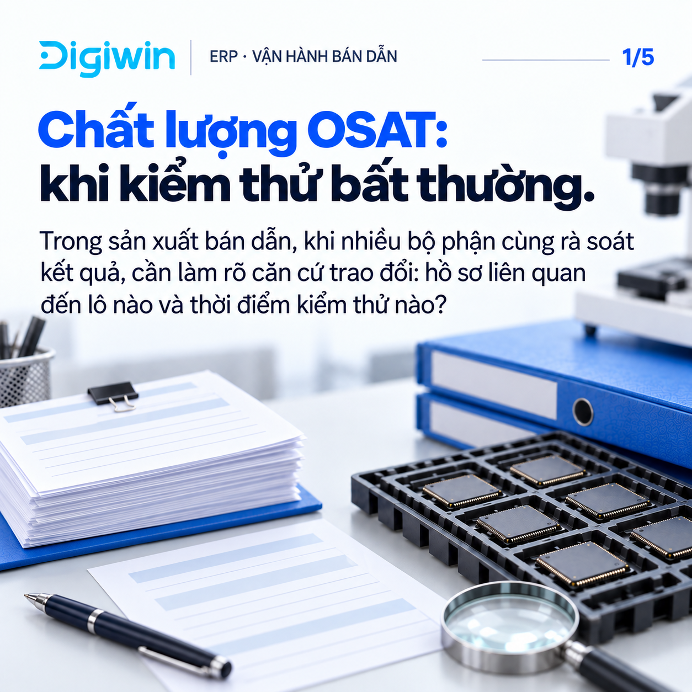
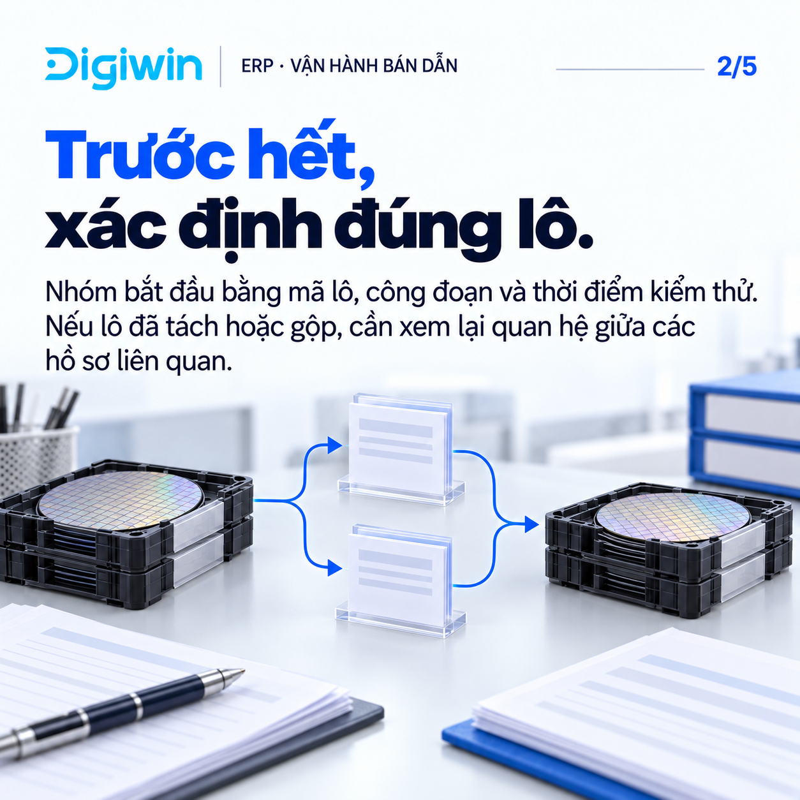

Góc nhìn quản trị cho chất lượng OSAT
Digiwin tư vấn giải pháp ERP cho doanh nghiệp sản xuất. Chúng tôi chia sẻ góc nhìn quản trị cho nhóm chất lượng OSAT (dịch vụ đóng gói và kiểm thử bán dẫn thuê ngoài) khi rà soát kiểm thử bất thường.

Góc nhìn quản trị cho chất lượng OSAT

Bắt đầu từ đúng lô
Đọc kết quả cùng ngữ cảnh
Thống nhất bước kiểm tra tiếp
Digiwin: góc nhìn quản trị bán dẫn
Đọc thêm về bài toán OSAT